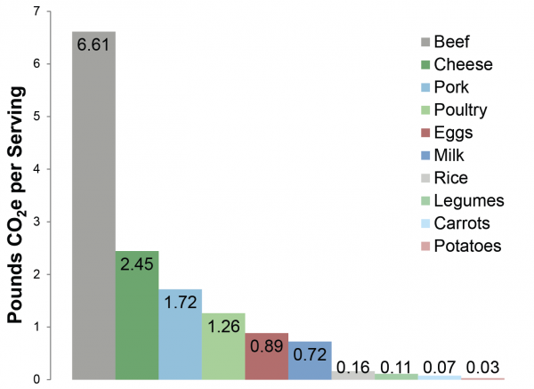

Personal Climate Question: Which of your daily routine produces the most carbon?
The more we consume, the more of the planet's resources we use, the more movement in production and distribution we generate, with the subsequent rise in CO2 emission figures.
Interesting Facts on Producing Carbon
Food
1 kg hard cheese generates 12 kg of CO2, which is the same amount a car produces
when travelling 6 km, as well as growing 12 kg of carrots.
If you're eating 444 calories a day of red meat (the equivalent of about one 8-ounce steak sirloin), your annual meat-related carbon footprint is 0.8 metric tons of carbon dioxide. Try switching things up with poultry, eggs, or even better, vegetables. Your carbon footprint will barely register.
Carbon emission for different food servings:

Transportation
Gasoline releases 19.6 pounds of CO2 per gallon when burned, compared to 22.4 pounds per gallon for diesel. However, diesel has 11% more BTU per gallon, which improves its fuel economy.
The average passenger car emits 0.79 pounds of CO2 per mile driven.
Let's say you commute 30 miles round-trip to work, which was about average in 2003, according to the U.S. Department of Transportation. That's about 7,800 commuting miles each year. And if you drive a car that gets 22 miles to the gallon every weekday, your annual carbon footprint from commuting is 4.3 metric tons.
Flying a 5000-mile round trip increases your carbon footprint by 2.23 tons of CO2.
Other Facts
For another completely everyday object, such as a mobile phone, just two minutes' daily use produces 47 kg of CO2 per year and an hour a day could produce the scandalous figure of 1,250 kg per year.
Drying one load of laundry a week puts 0.1 metric tons of CO2 into the atmosphere. Hang them outside and save yourself $11 in electricity costs while you're at it.
Running on a treadmill for 30 minutes three times a week will boost your carbon footprint by 0.07 metric tons per year. Take it outside and watch that number plummet to zero.
For more information on how to calculate carbon footprints, see below:
On Friday I attended the WBS Structure workshop in the IP session and helped designing the WBS. I also took notes for the
meeting per group we had. Meeting Notes Here
Week 13 Summary: 20200517-20200522
Primary Tasks:
For myself, I was finalizing design in sensor rig as well as the budget estimation sheet for it.
Started leading a new group constituted of Frank, John and Michael on prototyping; assigned tasks to Michael and John in checkin / before
working time.
Talked with Billy on current estimations / information on solar panel prototype.